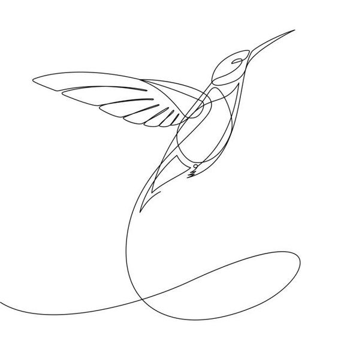
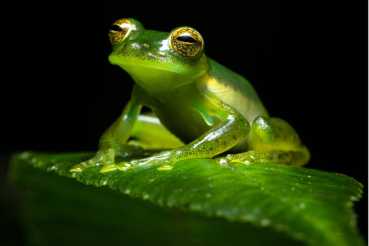
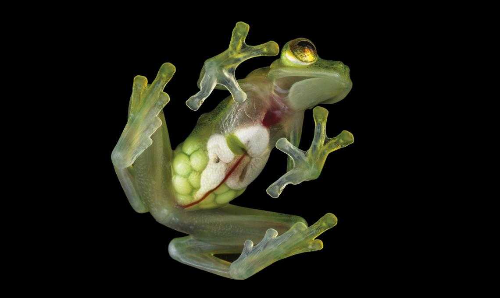
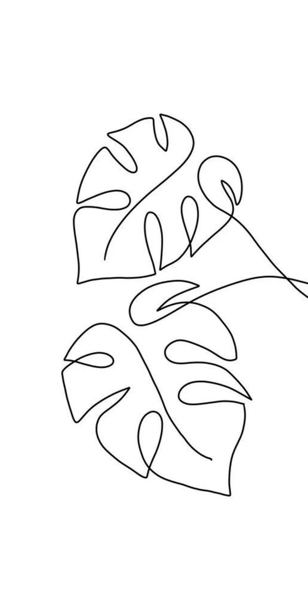

начало |
"Плюшени" крави |
Стъклена жаба |
Панда мравка |
Листовиден морски дракон |
 |
Това създание успяло да удиви учените не
само с прозрачната мембрана, покриваща органите ѝ, но и с
уникалните си поведенчески черти.Тъмнозелените петна по гърба на
създанието, в комбинация с характерния ѝ зов и
репродуктивно поведение, я определят като напълно отделен вид от вече познатите на науката жаби.Скорошният напредък на оптиката, генетиката и молекулярната биология дава
на изследователите шанс да разкрият живота на тези
миниатюрни и деликатни дървесни обитатели. Оказва се, че напълно
прозрачните земноводни са пълни с изненади.Характерно за новия вид
е, че кожата е почти прозрачна и
учените могат спокойно да изследват как
животното функционира, докато е още живо.Жабата ловува през нощта, а спи
денем. Издава специфични звуци и се различава от другите
земноводни от класа си с текстурата на кожата и
оцветяването си.
|
 |